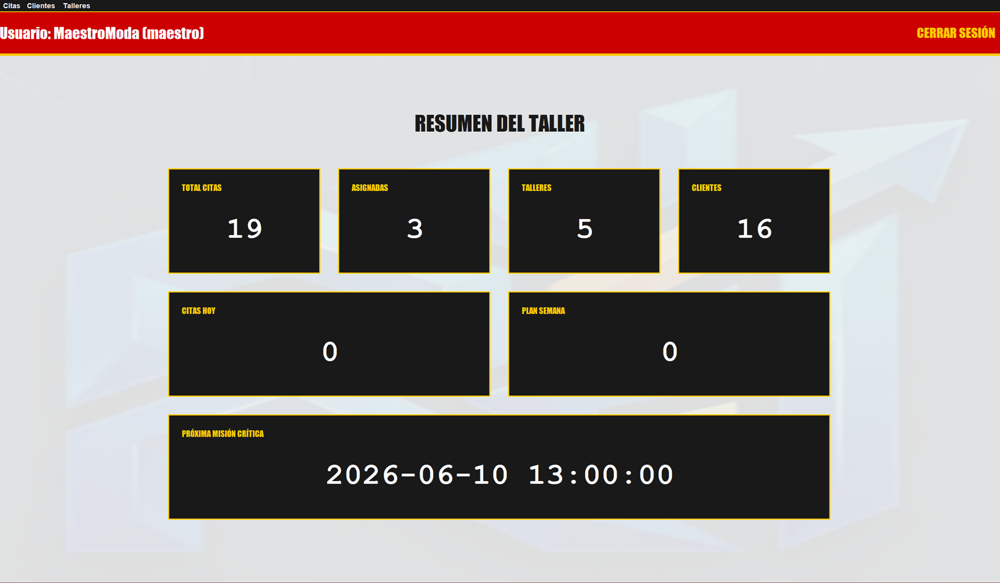
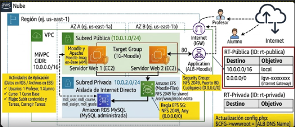

Proyecto integrador que desarrolla una aplicación de gestión para el taller de Edna Moda en Java e integracion de MySQL.
Proyecto de despliegue de Moodle en AWS mediante una infraestructura segura y escalable con VPC, EC2 y RDS.
Proyecto de desarrollo de una web corporativa responsive con HTML5 y CSS, basada en estructura semántica.
El Proyecto Integrador representa la culminación del aprendizaje en los módulos de Programación, Bases de Datos y Entornos de Desarrollo.



Este proyecto final de la asignatura de Fundamentos de la computacion en la nube, consistió en el diseño de una infraestructura de nube escalable y segura bajo el modelo de responsabilidad compartida de AWS.
Este proyecto se centra en el diseño y desarrollo de una plataforma web completa bajo estándares de Lenguaje de Marcas, priorizando la estructura semántica, la limpieza del código y la experiencia de usuario.